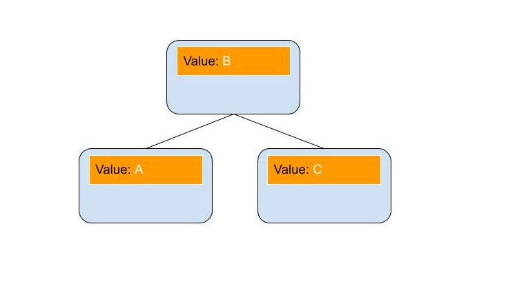

Treaps:
Let us begin with a normal Bianary Search Tree we learned in class, where each node contain a value, and the nodes are linked with lesser values being left children, and greater values being right children. This structure works great with bianary search, as when it is properly made it allows for data to be found in Log(n) steps.
These work great until you try to enter your data sequentially i.e. in acending or decending order. When this happens, the tree becomes very long, and you lose any advantages of a BST, as you will potentially have to traverse through every element.